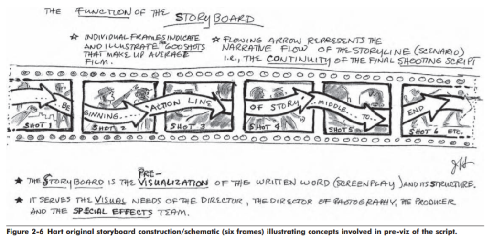

A storyboard is a powerful organization tool that blueprints a series of events. Storyboarding is the process of translating text into action through visuals, editing, and audio compiled in a storyboard. In other words, storyboarding is the culmination of communication that utilizes other methods of communicating a story to its audience other than only using standard spoken language, written language, and body cues. A good storyboard coherently relays the intended message from the text it is based off of to its audience, whereas a bad storyboard fails to do so. In this sense, storyboards share some traits with the process of writing a traditional essay.
When a person writes an essay, they usually write the general outline of the key points they plan to address instead of going straight to writing the final form of the essay. The main reason why people write outlines is to avoid the risk of wasting time and resources. If there is a case that the person had gone straight to writing the final form of the essay and they discover later on after many days of writing that there is an error in the overall structure and logic of their essay, that person would ultimately have to discard all of the time and resources they had spent writing what they wrote in order to correct the fundamental error in the structure or reasoning in their essay. Likewise, storyboarding is the same; another part of the significance of storyboarding revolves around how it affords it’s creators a cost effective way to add or readjust certain parts of the text to visual action translation if need be.
My Project’s Goal
Create a coherent animation storyboard that properly relays a short story to a general audience.
In this project, I made two storyboards in total; a personal one for me to work off of when working on the second and more polished storyboard complete with audio and video editing. The second storyboard is the one that is intended to be shown to a general audience. In other words, the more polished storyboard is the end product of my project.
Implemented Critical Theories
Referenced Work: The Art of the Storyboard - A Film Maker’s Introduction 2nd Edition by John Hart
Hart’s book goes over several storyboarding critical theories that my storyboard project will be implementing. Critical theories that will be utilized are as follows:
Animation Cel Painters vs Storyboard Artists - The importance of Storyboarding:
There is a fundamental difference between animation cel painters and storyboard artists. Animation cel painters are tasked with the rendering of the animation, or the coloring of each frame for an animation’s final output. Storyboard artists on the other hand, focus more on the translation of text to visuals and how to portray this rendition to its audience. In other words, storyboard artists are the brains or blueprinters.
“Most of the artists on Walt’s creative team simply worked at coloring the hundreds of thousands of cels (acetate sheets) that comprise a full-length cartoon. Those cel painters, called “inbetweeners,” actually went on strike a couple of times for more money. Now, if one had the talent to get a job in animation as an idea person, a concept sketch artist, a production design artist, a storyboard artist, or a character design person, that would have been a different story and a more creative one.” (Hart, xi)
“The storyboard artist’s job is to give cohesion, interpretation and illustration to the visual spine, the “flux of imagery” that will constitute the screenplay. He or she will render or sketch, when requested by a particular director, all the necessary action in each key sequence or shot” (Hart 5)
“Many preliminary sketches were made to show not only the settings themselves but also the action and movements of the actors” (Hart, 15)
Visualization of the Concept of a Storyboard:

(The Art of the Storyboard - A Film Maker’s Introduction 2nd Edition)
Cost Effectiveness in Storyboarding:
Any project that is well-planned before it’s execution is a principle that also applies to storyboarding.
“One salient point can be made: Many great producers and directors in the history of the motion picture used some form of preproduction planning. They realized how much time and money could be saved (balancing their budgets) if their preproduction people utilized a carefully laid out storyboard that was the “visual spine” of the screenplay. In other words, they could readily see, by referring to storyboard sketches, who had to spend what and for what purpose.” (Hart 18)
“Many preliminary sketches were made to show not only the settings themselves but also the action and movements of the actors” (Hart, 15)
Art and Film Critical Theories:
*Some principles of framing can be applicable to other mediums like photography—animation is pretty much moving pictures after all
Framing using Centers of Interest:
(The Art of the Storyboard - A Film Maker’s Introduction 2nd Edition)
Framing using Concentric Circles:
(The Art of the Storyboard - A Film Maker’s Introduction 2nd Edition)
Shot Angles:
Close-Up (CU): full face shot of actor(s) or up close shot of objects.
Extreme Close-Up (EXT CU): so close you see only actor’s eyes.
Establishing Shot (EST): shows the placement of the actor(s) for the audience.
Long Shot (LS): shows the actor(s) or objects in the distance (background).
Medium Shot (MS): shows the actor(s) or objects in the MGD.
E.j: In order to emphasize an emotion—such as shock after a disturbing event has occurred, a fish lens close up of a character’s face where the eyes are the main focus may be used. This Neon Genesis Evangelion screenshot provided uses such technique.
Storyboard Example:
(The Art of the Storyboard - A Film Maker’s Introduction 2nd Edition)
Note how in storyboards, there is a marriage of the previously discussed critical theories. Also note how there are descriptions accompanying these storyboard panels, which is crucial especially since this particular storyboard format is in paper form rather than video form.
Earring Storyboarding Process: From Test to Storyboard
I actually worked off of a very short comic I drew a while ago, but ultimately I started out with text. I used a word processor such as Google Docs to write the text, Clip Studio Paint for the storyboarding and video editing process, and Audacity for the voice acting portion of the project.
*Bennett and Razor are characters from Genshin Impact. Due to time constraints from having to write 6+ 4-10 page essays and two other projects for my other classes and having to change my project topic for this class last minute, I had to go with a short story I had already established before. Out of all of my classes though, I spent the longest on this class in particular since storyboarding and creating a polished storyboard—especially when you have to draw and plan out all of the visuals, editing, and sound design—isn’t something that can be done quickly at all.
1) Text Script
Title: Earring
Bennett:*chibi drawing to set happy fun time/friends mood* “I’ve been meaning to ask: can I look at your earring up close?”
Razor: “? Sure.”
*Bennett reaches his hand out and lightly brushes Razor’s long hair back. He is close to Razor.*
Bennett:*Big smile/normal proportion drawing; amazed* “Uwahh, so cool!! Ah! Your ears are so cute! Never really saw them because of your hair—?”
*Razor tilts his head and grabs Bennett’s hand that’s on his ear*Razor: “Bennett make face tickle.” *Razor nuzzles Bennett’s hand* “H-heart tickle too…”
Bennett:*Unexpected Emotional Attack* (Bennett’s thought: So CUTE!!!)
END
*I mean even at the writing stage, since I was already planning to turn this text into a visual format, there is consideration of the visual portrayal of the text such as the inclusion of details about why exactly Razor becomes nervous—which is because Bennett’s hand is on his face and because Bennett is incredibly close.
2) Comic Reference
This comic technically is a storyboard, but it’s not an animation storyboard, it’s a comic storyboard. Since my project is about animation storyboarding, I won’t go too into detail about how I framed stuff in this comic—I will go into detail in the animation storyboarding portion.
3) Rough Animation Storyboarding: Storyboard for Me to Work Off Of
This version of the storyboard was only intended for myself to use as a guideline or blueprint for the polished storyboard version, which is why there is no descriptive technical text accompanying the storyboard frames. If I was working with other people, I would definitely be more detailed in this rough draft and include text descriptions for each scene to ensure clarity, but since I worked on this project alone, I didn’t need to since I understood what I intended to do. When making this particular storyboard, I had to consider the framing, editing process/pacing, voice acting, drawing styles, and audio.
For this storyboard, I started off establishing the core mood I was going for when I wrote the text, which was a lighthearted and happy tone. From this, I worked on making the rest of the storyboard elements such as the framing, pacing, voice acting, art design, and audio design reflect the core mood.
Framing:
If this storyboard was based off of an action-fight oriented text, then panel scrolling, emphasis on landscapes, and fight movements may be utilized, but since the text I used is just about two friend’s conversation, I focused more on making the animation frames more focused on the characters themselves and specific key actions they perform, such as Bennett brushing back Razor’s hair. If I had used panel scrolling and put an emphasis on landscapes in my storyboard, the constant moving from the panel scrolling may be distracting and the emphasis on landscapes would have no relation to the goal of the text. In other words, the focus is on the characters and their dialogue, not the scenery or scrolling.
Editing Process/Pacing:
When storyboarding, one has to consider the flow of action and final editing process. Pacing is very important since drawing out scenes for too long or making a scene too short can confuse or bore the audience, and it can also provide different connotations to a particular scene. In other words, I didn’t put in too many frames to avoid making the pace of the animation too slow, and I also didn’t put in too little frames to avoid making the pace of the animation too fast.
Voice Acting:
Language Choice: Chinese
The reason why I choose Chinese audio rather than English audio is because the Chinese voices for these characters are closest to my tone register. Razor’s voice in the English audio is pretty deep. I also picked Chinese because I wanted to practice speaking it since I only started speaking it fall semester 2021-2022, and also so that I could practice lip sync animation. I apologize in advance to any advanced Chinese speakers because although I did many recording takes, I still sound wonky when pronouncing some words.
Adding Emotion to Voice Acting:
The storyboard’s happy and light hearted tone needs to be reflected in the voice lines for both characters along with portraying both characters' personalities. Out of all of the emotions I used when voice acting, most of them are centered around excitement, shyness, and appreciation—stutters and casual language was used to help supplement the representation of these emotions. Emotions of anger, stress, and despair—such as yelling, screaming, and wailing—were not used when voice acting.
For the sake of providing an example of voice acting in practice, I recorded a voiceline for Bennett. The first time I recite his line in the audio clip, I am just reading the line. The second time I recite his line in the audio clip, I am voice acting. In the voice acted line, I use an energetic tone to show Bennett’s energetic personality, and I also add a hint of desperation with the word “please” to also portray Bennett’s desire to team up.
Art Design:
Instead of using words or written text, special effects such as speed lines, sparkles, sweat marks, background flowers, and blush were used to portray a certain feeling.
Another element that I considered when storyboarding is how I should draw each picture for each scene. In the initial storyboard, I considered when and what scenes I should draw the two as chibis—miniature versions of themselves—or draw as normally proportional people. I usually drew the two as chibis in scenes where they are stimbky or more on the silly cute side of things, and I only drew them normally when a more serious matter is going on (e.j: Bennett asking Razor if he can see his earring—normal proportions to simulate sense of seriousness and weight of situation since there is the threat of his inquiry being rejected). The quality of how I drew these pictures also plays a hand in portraying the mood of the scene. For instance, in the scene where the viewer is viewing Bennett through Razors eyes as Bennett is admiring Razor’s earring, I specifically spent a lot of time rendering that lineart because since the viewer is seeing through Razor’s eyes, I wanted to portray how blinding Bennett is to Razor’s eyeballs. For lack of better terms, within the limits of my art capabilities I tried to make Bennett cute because that’s how Razor views Bennett. On the other hand, the scene where Bennett becomes flustered from Razor’s admittance that Bennett makes him feel shy is rendered or drawn pretty poorly, but that was on purpose. I specifically made Bennett look bubbly or like mochi in that scene to portray him melting from fluffy feelings. Thank you. That was a little embarrassing to write, but an explanation needs to be provided.
Audio:
One of the challenges of this storyboard was to portray effects that aren't heavily reliant on words. Some special effects were portrayed visually, however, other effects had to be portrayed through audio. When working with audio design, one has to think outside of the box. For example, in action movies, the sound effect of a fist punch cracking bones are actually usually the sound of a sound designer breaking crisp celery. Similarly, when Razor tenses up from Bennett touching his face (00:26-00:28), I used the sound effect of squeaky windows. The reason why I used the sound of squeaky windows instead of a more realistic sound like the rustling of clothes to portray that particular action is because the squeaky window sound effect is more in line with the core mood of the story that I am trying to establish in this storyboard. There are other instances of sound effects that were specifically picked out in comparison to other sound effects for this specific purpose.
4) Polished Storyboard: Storyboard meant for presentation to an audience
This is my polished storyboard. Thank you for taking the time to watch it. Clearly, I did not follow the storyboard to the T, however, that is okay since storyboards are meant to be subjected to change. If there’s a better way to do something, then it’s best to make that adjustment. A lot of adjustments I made in this case was to remove some frames in order to reduce clunkiness and improve upon flow and pacing. Moving forward, I will be using the skill sets I’ve practiced in making this storyboard. The skill sets I’ve improved upon aren't only limited to the artistical, communicative, and planning aspect of storyboarding, I have also improved upon my time management and efficiency skills. This project will be added to my portfolio.